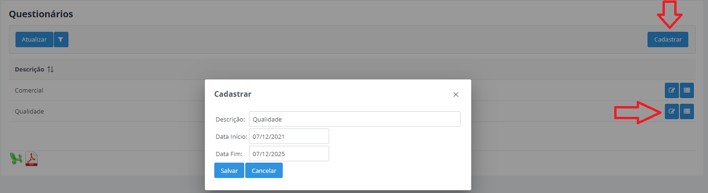
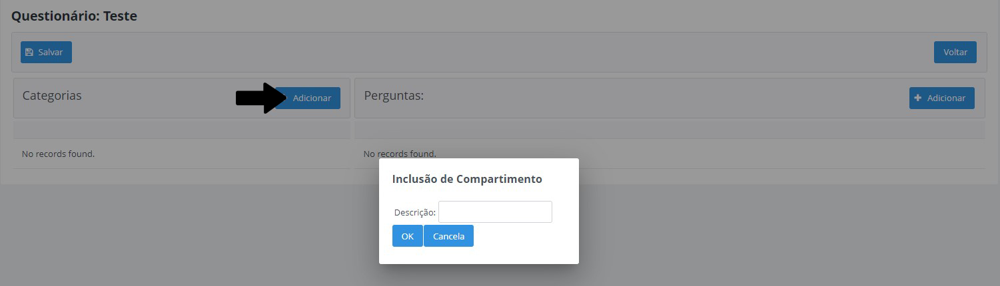
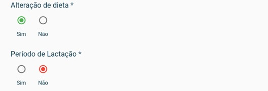

Técnico
Vizualizer como é o funcionamento do aplicativo do tecnico
Cadastre um questionário para que o tecnico possa realizar
No milkroute web acesse à abá de cadastro e selecione questionário
Cadastrar Novo questionário

Campos para Preencher :
Descrição- Permite informar a descrição do questionátio.Data Inicio- Permite inserir a data de inicio de uso do questionárioData Fim- Permite informar a data máxima de uso do questionário

Cadastrar Categoria
Descrição- Permite inserir um nome para a categoria

Cadastrar Perguntas para Categoria :

Principais campos para preencher :
Descrição- Permite informar a descrição de referência para a pergunta.Tipo de Resposta- Permite informar o tipo de resposta para essa pergunta, sendo elas:- Escolha Uma: permitirá que a pergunta tenha somente uma resposta, por exemplo: Sim ou Não.
- Multipla Escolha: permitirá que a pergunta aceite mais de uma resposta.
- Texto: permitirá que a pergunta aceite uma resposta de texto curto.
- Combo: permitirá que o técnico selecione uma das respostas parametrizadas.
- Data: permitirá que a pergunta aceita somente data como resposta.
Ativa- Caso desativado a pergunta não irá aparecer no questionárioTamanho Máximo- Permite definir um tamanho máximo de resposta para essa pergunta, utilizado em perguntas do tipo texto, caso contrário pode definir como zero.
Incluir Respostas

Campos para preencher :
Descrição- Informe uma descrição para a resposta| "Um nome para ser mais especifico"Valor Resposta- Permite Inserir um valor de respotas, sendo elas- Escolha uma: o valor deve ser true para positivo ou false para negativo
- Multipla escolha: o valor deverá ser "text"
- Texto: o valor deverá ser "text"
- Combo: o valor deverá ser "text"
- Date: o valor da respota deverá ser "date"
Cor- Defina uma cor para agradar a visualização da respostaAtiva- caso está opção esteja desativada a resposta não aparecerá

Tecnico
Tenha um tecnico cadastrado para que possa definir seus questionários
No milkroute web vá em basico e acesse o campo tecnico
Selecione um tecnico e clique na opção para alterar
Selecione um questionário desejado clique na seta unica para enviar esse questionário escolhido, caso deseja mandar mais de um questionário é possivel, caso queria manda todos de uma só vez clique na seta dupla, clique nas setas em suas respectiva direção para mandar onde quiser
Mapa Visita
Cadastre uma agenda para a visitas dos tecnicos
Nova Visita

Campos para preencher :
Questionário- Selecione qual questionário será usado na visitaPropriedade- Informe o nome da propriedade
Appós criar uma nova visita, uma listagem de todos os itens aparecerá


Vizualizar observações e recomendações
Exibir respostas
Opção para baixar um pdf sobre as informações da visita
Aplicativo
O app tem a função da visita do tecnico, ele sera usado no momento da visita
Visitas


Ao acessar a pagina, mostrará todos as visitas que devem ser feitas
Visitas em azul- Todas as visitas que tiverem em azul estão confirmadaVisitas em amarelo- Todas as visitas que tiverem em amarelo são vistas solicitadaVisitas em cinza claro- Todas as visitas que estiverem com uma cor acizentada são visitas agendadaVistas em branco- Todo tipo de visita que estiver em branco são visitas em andamentoVisitas em Verde- Visitas que estiverem verde são visitas finalizadas
Ao clicar no ponto de interrogação na parte superior da pagina, uma mensagem será exibida
- Pressione uma visita para iniciar
- Segure pressionado para reagendar uma visita
- arraste para o lado para cancelar um agendamento

Nova Visita
Ao clicar na opção de nova visita, você será redirecionado para uma nova abá onde você deve colar o nome da propriedade para a visita
Selecione a visita para ser iniciada, ao clicar uma mensagem aparecerá se deseja iniciar o preenchimento do questionario, ao inicar você sera redirecionado para uma nova abá com informações da visita, recomendações e observações

Ao ler as recomendações e observações passe para continuar o questionario
!!!OBS: Todas as perguntas e categorias do questionario são apenas para demonstração, elas não serão iguais a que aparecerão em seu aplicativo
!!!A imagem acmia demostrar perguntas de escolha unica, selecione a opção mais adequada para a pergunta
Exemplo de Resposta:

Outros Exemplos de Resposta :
Resposta de Multiplas Escolhas

Resposta Combo

Resposta com apenas Numeros
Resposta com apenas Datas
!!Ao clicar uma abá para você escolher a data aparecerá
Finalizar
Após preencher todos os campos, só resta finalizar
Video de Exemplo para tutorial :
Visita Imprevista
Caso tenha que realizar um visita imprevista basta acessar nova visita inserir o nome da propriedade e arrastar para o lado na opção visita imprevista e selecione qual questionario será usado para essa visita imprevista, após selecionar siga os mesmos passos de uma visita agendada